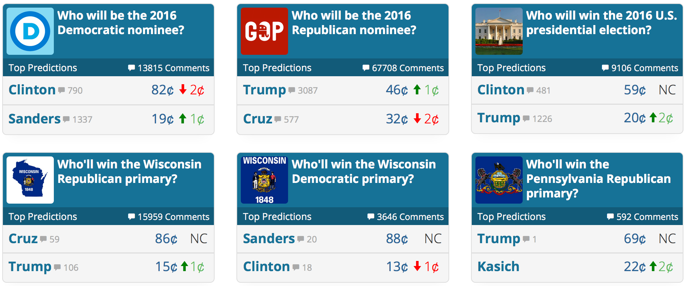
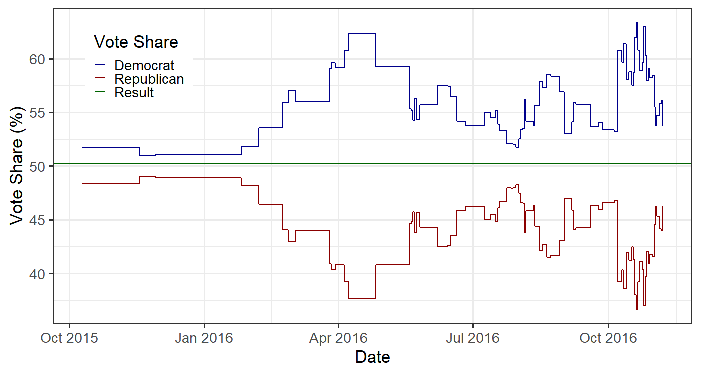
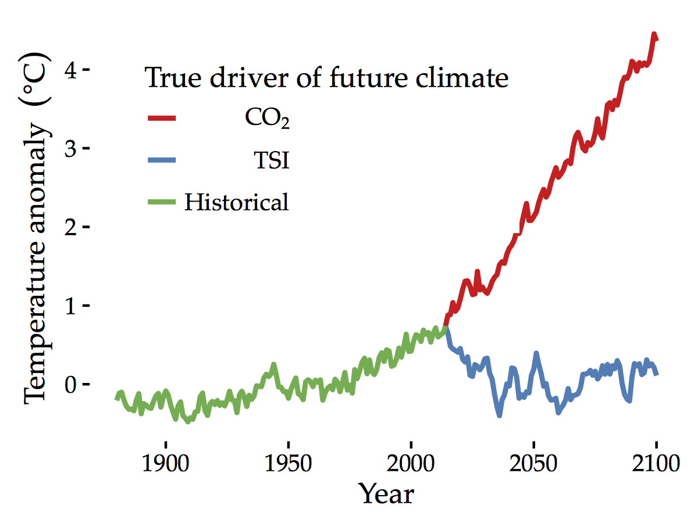
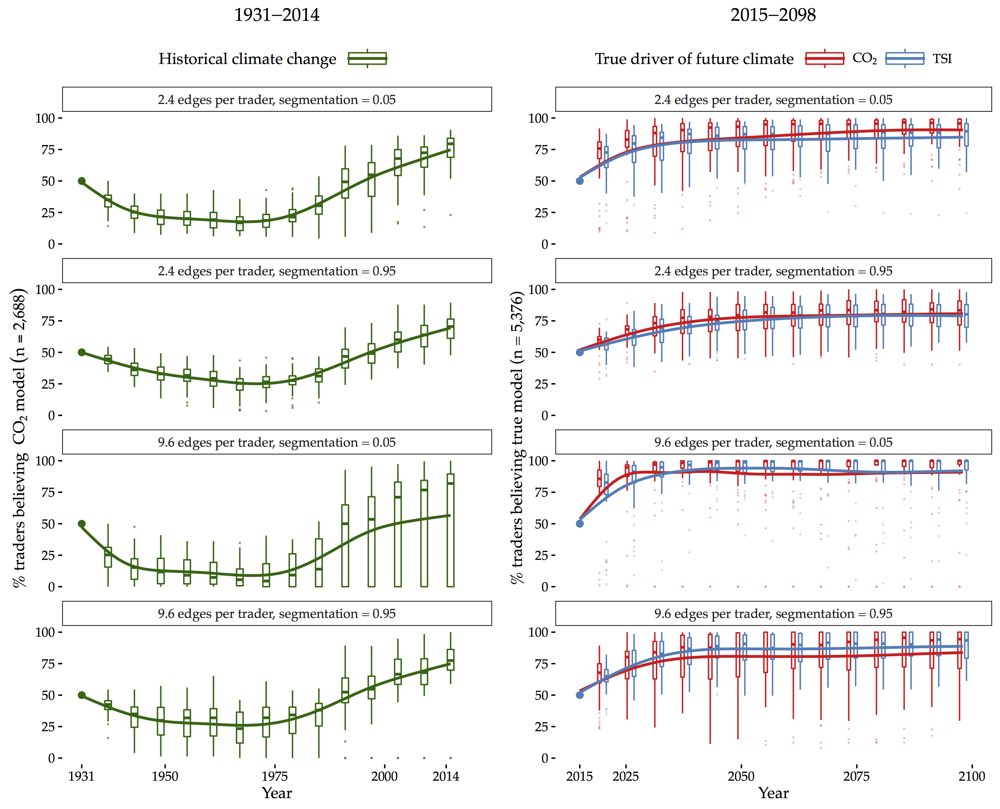
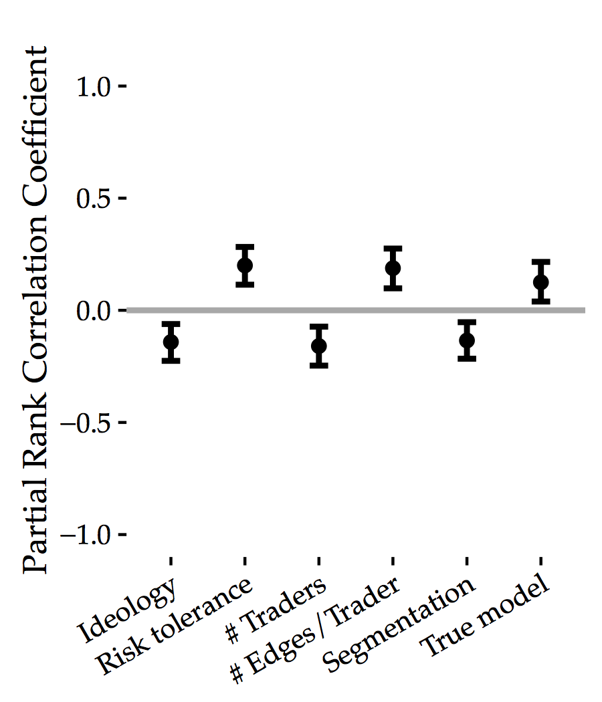

Wrapping Up: Review and Looking Ahead
EES 4760/5760
Agent-Based and Individual-Based Computational Modeling
Jonathan Gilligan
Class #26: Thursday, November 21 2019
Final Week
Office Hours
- Extended Office Hours:
- Mon. Dec. 2:
- 10:00–11:00 am,
- 1:30–5:00 pm.
- Tues. Dec. 3:
- No office hour.
- Wed. Dec. 4:
- No morning office hour
- Afternoon: 1:00–5:00 pm
- Mon. Dec. 2:
Presentation Schedule
Tuesday Dec. 3:
- Alyssa Chvasta
- Bowen He
- Michaela Peterson
- Alex Rice-Slothower
- Kat Turk
Thursday Dec. 5:
- Sam Heagney
- Alex Ismodes
- Andrew McKinnis
- Nidhi Mehta
- Jessica Mo
Presentations
- 10 minutes each plus 2 minutes for questions
- Structure:
- Start by describing your research question
- Describe the model you started with and how you changed it
- Describe the experiments you performed:
- What outputs did you observe or measure?
- What parameters did you change?
- Results: Show what you saw (graphs from the model or behaviorspace, images of the model view with turtles and patches, etc.)
- Discussion and conclusions
Final Paper
- Write this up as though it were a scientific journal paper:
- Abstract (1 paragraph)
- Introduction
- Basic research question and why it’s interesting
- Methods
- Describe the model you started with and how you changed it to answer your research question
- Describe the experiments you ran with the model.
- Describe what outputs you measured
- Results
- What did you see (graphs of output, pictures of turtles on patches, etc.)
- Discussion, conclusions:
- What did you learn from the results of your experiment?
- If you had more time, what would you do next with your model?
- Do you think these results point to possible uses for your model?
Agent-Based Models for Policy Design
Prediction Markets

Prediction Markets and Beliefs

- Predictions overestimated Clinton by ~5%
- Losers may re-evaluate beliefs
- Winners’ beliefs reinforced
Climate Change and Prediction Markets
- From 1990–2013, increasing scientific confidence that recent warming is mostly caused by human activity.
- From very uncertain in 1990 to 95% certain in 2013.
- But, public’s beliefs did not change much.
- Distrust of scientists
- People who distrust scientists may trust markets
- Prediction markets: “Put your money where your mouth is”
- Efficient information aggregation.
- Do they also change beliefs?
Prediction Market Simulation
- Research Question:
- Might prediction markets be useful for increasing convergence of climate beliefs?
- If so, under what conditions?
- Why simulation?
- Real prediction markets focus on near term events.
- Difficult to extrapolate to climate case.
- We can observe traders’ actions, but not their beliefs
- Real prediction markets focus on near term events.
- Simulation modeling informed by climate and economic theory to study potential of prediction markets for producing agreement.
Two Alternate Realities

Trader Beliefs
- Initialize traders with half believing each cause of climate change.
- CO2 or Total Solar Irradiance?
- Traders using correct model may not make accurate predictions
- Functional form correct, but must calibrate parameters on noisy temperature records.
Social Network

Simulation Model
- Traders estimate forecasting model.
- Six years of trading
- Payoffs at end of 6 years.
- Decide whether to adopt beliefs of wealthiest neighbor in social network.
- Repeat
Trading Sequence
- Securities represent temperature ranges.
- At maturity, pay $1 if temperature is within range
- Each year, traders use last year’s \(T\) to update personal model
- Predict probabilty distribution \(p(T)\) for \(T\) at maturity date
- Assign expected value to temperature securities.
- Continuous double-auction:
- Each trader takes a turn:
- Picks a random security in portfolio to sell (willing-to-accept price, WTA)
- Picks a random security to buy (willing-to-offer price, WTO)
- Trading whenever \(\text{one trader's WTO} \ge \text{another trader's WTA}\)
- Each trader takes a turn:
Convergence Over Time

Market Parameters
- Ideology: resistance to changing beliefs
- # traders: size of market
- # edges per trader: density of social network
- Risk tolerance: aggressive WTO, WTA prices, greater risk of not finding counterparty.
- Segmentation: is social network an echo chamber?
- True model: 1 for CO2, 0 for solar irradiance.
Sensitivity Analysis Results

Conclusions
- It appears that traders in a climate prediction market would converge to the correct belief about the cause of climate change.
- Convergence is much faster if social networks effectively link people with different beliefs.
- Echo chambers inhibit learning
- In a highly connected network, convergence to correct belief takes about 10 years.
- Results are not very sensitive to any of the parameters.
Next Steps
- Study sensitivity to network topology
- Seeking funding for an experimental market